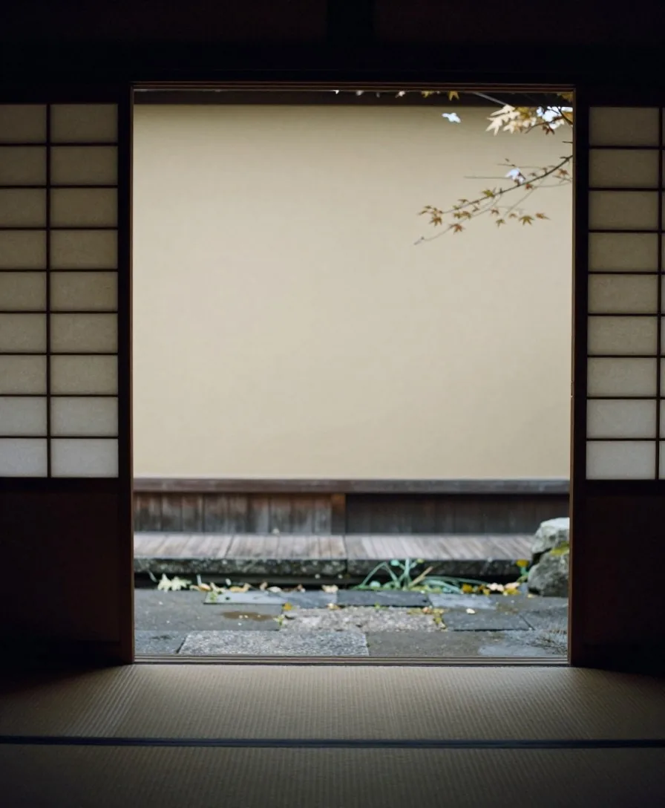

湯宿 澄川 ・ 春夏秋冬
湯の音だけが、
聞こえる。
谷あいに、十二の部屋だけの小さな湯宿があります。
ここでは、宿の姿をお見せしません。
廊下の奥にともる灯り。障子に映る木々。立ちのぼる湯気。窓を打つ雨の音。
頁をめくるように、季節をひとつずつ、お過ごしください。
芽吹く山々と、やわらかな朝の空気。 深い緑と、渓流の涼やかな音。 色づく木々と、静かな夕暮れ。 雪景色と、湯けむりに包まれる時間。
― 序 ―
SUMIKAWA春夏秋冬の巻

あなたに合う滞在
三つの問い
答えると、おすすめのプランをお伝えします。結果は、ご予約にそのまま引き継げます。
ご案内
奥付
- 所在地
- サンプル（架空の澄川温泉）
- 客室
- 全12室（標準和室6・広めの和室4・特別室2）
- チェックイン
- 15:00（最終18:00）／チェックアウト 10:00
- 送迎
- 谷口駅発 14:30／15:30／16:30（前日18時までに要予約）
- 電話
- 000-0000-0000（サンプル）
このサイトは Web 制作の見本です。宿名・所在地・料金・図案・写真（AI で生成）は、すべて架空です。